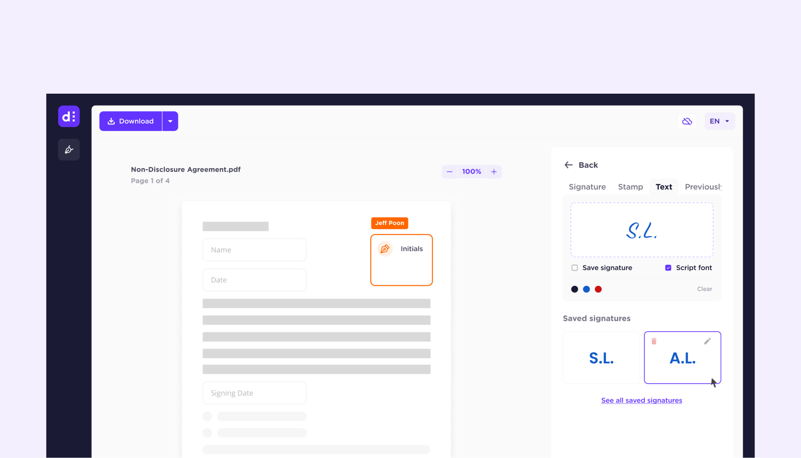
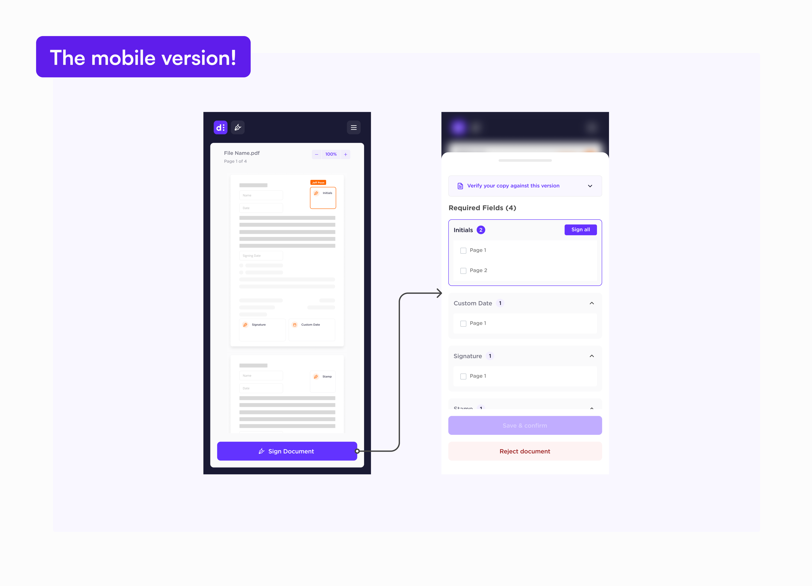
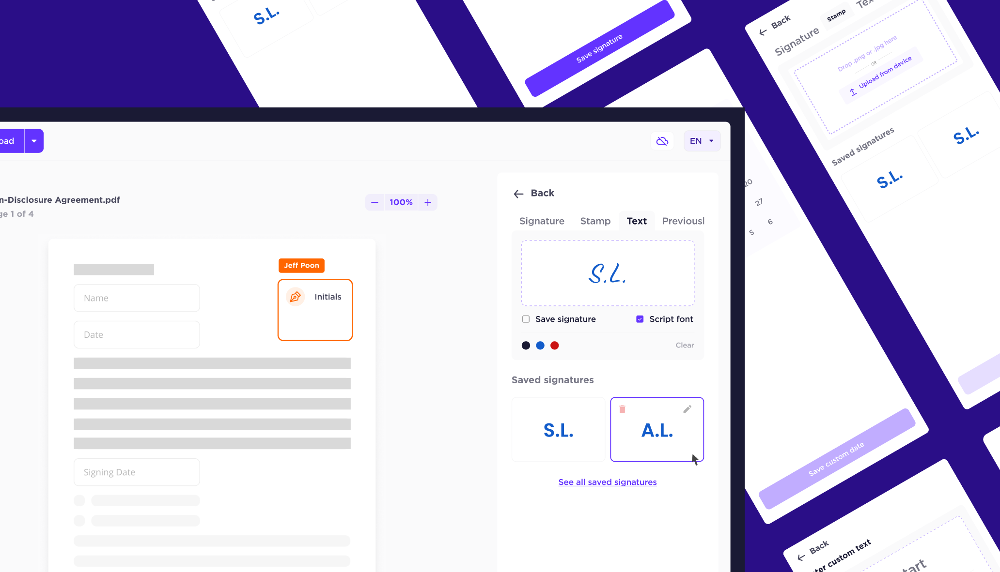

Rethinking secure digital document signing.
The design challenge
How might we reduce drop-off rates in a digital signing flow , while bringing the product in line with a brand built around trust?
The tldr;
Problem:
Dedoco's signing flow was causing users to drop off mid-process and driving up support load, while the visual design no longer reflected the brand.
What I did:
I led design end-to-end to deliver dSign, from supplementary research through to shipping a redesigned flow with a new component library.
What changed:
Drop-off mid-signing reduced, support tickets decreased, and the product shipped with a visual identity that could hold up to a Singaporean bank contract.
Business context
- User drop-off mid-signing was generating support tickets and eroding confidence in the product.
- A full rebrand was underway, requiring the product UI to catch up to the new visual identity.
- Dedoco was actively pursuing a contract with a Singaporean bank, raising the stakes on first impressions.
Screens


A detailed walkthrough is available on request.